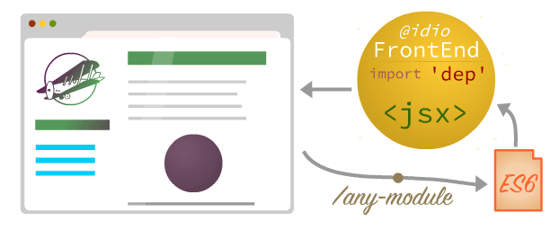

As usual, when not knowing how to do animation, a bit of anxiety and leaving the workplace for food/tea _etc_. But in the end, you're just, let's get on with it, and draw a line. I know I want it the prettiest very well designed line in the world, but let's just press `N` and draw the line / a circle. I wish I could draw properly, but we have to work with what there is. By the end of the day (or night, or start of the new day as it was 8 am), I was testing frontend middleware on photo-uploader, and it didn't work as I didn't write code in _Idio_ to hook up the hot reload config properly. Also when overriding methods of the class's prototype, if it's a getter, it will actually be called: ```js class A { get test() { console.log('hello') return 'test' } } A.prototype['test'] // -> this calls getter and // produces side effects // such as console logging ``` Instead, I'll have to use `getOwnPropertyDescriptor` for updating prototypes. Moreover, I realised I have to not only update those methods that changed, but ALL methods of the prototype, because the code in the file might have changed that is referenced by the method, therefore even if its code didn't change, it might be calling a function that was updated. ```js class A { test() { return example('test') } } // this can change so the whole of prototype must change // on updates, since we don't know which method used it const example = (s) => { return s + '!' } ``` Stack overflow is addictive AF. They're worse than facebook because you're generating quite a bit of interaction and you always want to go back to check responses / whether your answers were accepted. I don't like that it's triggering the part of the brain that's compulsive. Plus their badges... Visit on 600 consecutive days, keep getting 200 rep, etc. It's really annoying. Finally, when experimenting with hot-reload in React, I had to install it and try updates. It was good to understand how their, and Webpack's reload works in details. This type of information is much more useful for a blog post instead of talking about how we're all hostage to their technology. Abramov's reload does have disadvantages: when stepping into a method, you have to click multiple times to go through proxy. Same with Webpack's modules, you have to click "step in" thrice to end up in the function that you want. Therefore my reload is even better than these heavy solutions. Also a bound function won't be updated in React-hot-reload, since it was bound in the prototype, so we're equal here. One way to fix this, is to override the constructor method of a class which will only be called once, and apply a proxy to any function that is being bound. This should only need to be done for bound functions as all other times we can simply override the prototype. *TODO*